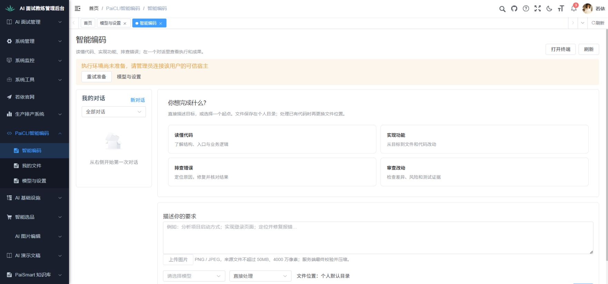
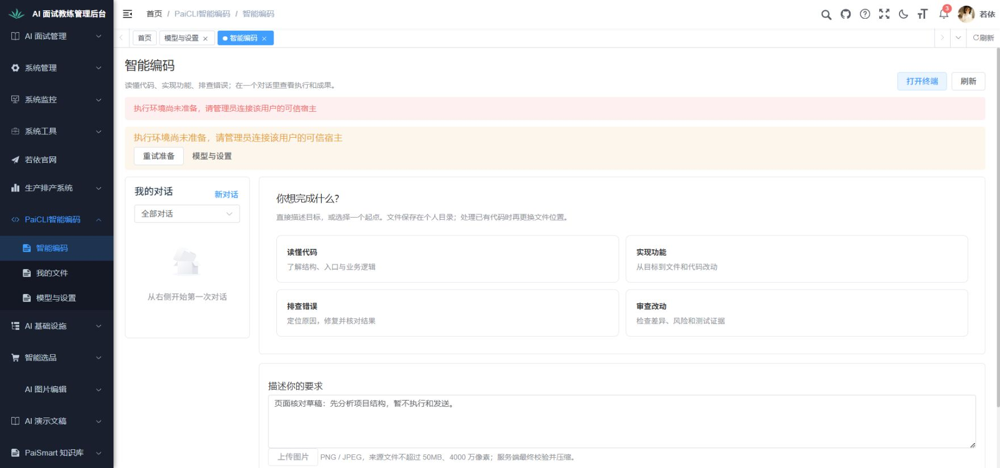
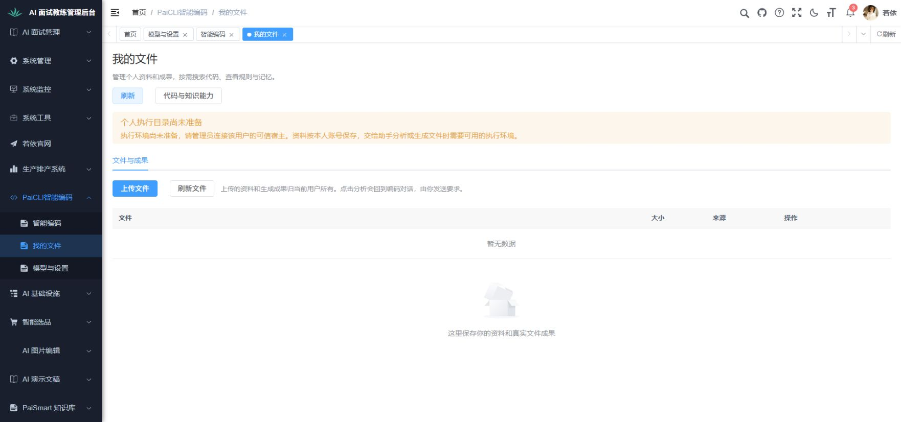
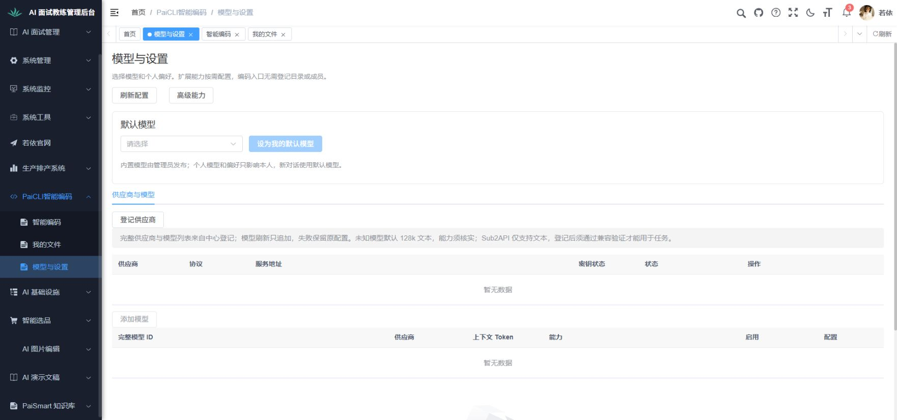
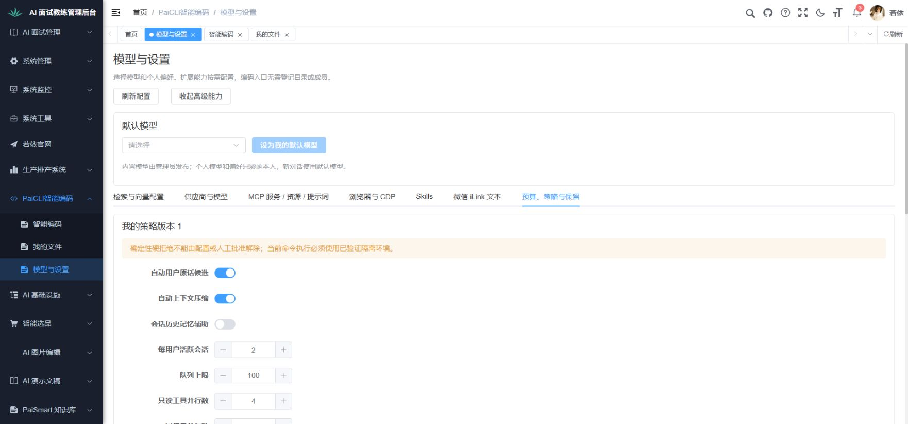

PaiCLI 个人入口本机页面核对
本轮实际执行4项页面核对，4项通过，沿用旧轮次0项；首轮发现的文件页问题已保留并定向复验。
日期：2026-10-04 · 执行者：主对话 · 要求：已批准个人使用设计v0.2第1、2章
环境：用户Chrome现有若依登录态，1762×826视口；本机前端15176、最终中心与原库schema7。Chrome具体版本未读取，未建立新账号或授权。
1. 新版导航与直接输入
通过前提与步骤：最终中心和schema7已更新，刷新当前Chrome并从若依菜单进入智能编码。
预期与核对：三个日常入口、四个能力起点和输入框可见；无需工作区、成员或Runner登记，个人能力接口不再404。
实际：实际菜单显示智能编码、我的文件、模型与设置。工作台可见读懂代码、实现功能、排查错误、审查改动，以及个人默认文件位置；未出现旧配置表单或个人接口404。
当前执行环境未准备，入口显示不代表能执行；没有发送请求或创建模型任务。

01-智能编码实际页面.png2. 环境缺项与输入保留
通过前提与步骤：输入“页面核对草稿：先分析项目结构，暂不执行和发送。”，点击页面刷新，再点击打开终端。
预期与核对：缺少可信宿主和模型时不执行，刷新保留草稿；终端给出真实原因，不伪造连接或进程。
实际：刷新后草稿原文保留；打开终端显示“执行环境尚未准备，请管理员连接该用户的可信宿主”。发送按钮disabled，实库任务、会话、消息和Runner计数仍为0。
仅验证页面内刷新保留；未验证跨路由永久保存、真实Agent或PTY。

02-草稿与终端缺项实际页面.png3. 我的文件的空目录状态
通过前提与步骤：从实际菜单进入我的文件，核对空列表并点击页面刷新；修复后再执行同一步骤。
预期与核对：展示本人文件入口和目录准备原因；没有目录时不发需要目录的索引请求，不通过上传隐式访问任意本机路径。
实际：最终页面显示个人执行目录尚未准备及真实宿主原因；刷新后文件列表为空，没有原参数错误。组件回归另核对空目录不发indexes/search/graph，并继续本人sessions和PERSONAL memories读取。没有选择或上传本机文件。
未执行实际上传、文件正文分析、生成、下载及两用户数据隔离；这些需要对应文件和执行环境。
保留首轮问题与修复证据
首轮未通过：空目录没有准备说明；追加说明后刷新仍调用空directoryContextId的indexes接口，出现Required request parameter错误。原失败截图保存并回读，未将失败改记受阻。
新增真实准备提示，目录索引和检索/关系图/重建/PROJECT记忆采用目录前提，个人文件/对话/个人记忆继续读取；修复后Chrome定向刷新复验通过。
查看原失败截图
06-我的文件刷新最终复验.png4. 模型与设置清晰独立
通过前提与步骤：从实际菜单进入模型与设置，查看默认模型与供应商列表，展开高级能力并进入预算、策略与保留。
预期与核对：默认模型与供应商配置独立，空配置准确；高级项按需展开，无旧登记表单，个人预算读取不依赖目录。
实际：默认页只有供应商与模型配置，当前空模型不能设为默认。高级能力展开检索/向量、MCP、浏览器、Skills、微信、预算等标签；个人策略版本1及预算项实际可读，无目录参数错误。未保存配置、登记供应商或调用外部服务。
平台模型发布、撤销和真实调用仅有中心回归证据；未在本机配置或调用真实模型。

04-模型与设置默认页面.png
05-高级能力与个人策略.png真实执行与用户决定
当前没有该用户的可信个人Runner和可用模型。真实个人目录创建、默认问答、代码修改与检查、成果文件和终端PTY链路受环境前提阻断；本次没有收费模型调用或借用其他业务密钥，不能声称普通用户已可直接完成真实编码。
中心158项完整回归、前端类型检查/组件测试/构建、原生定向检查及契约核对单列在实施记录；不计入本报告4项页面通过数。
用户决定：待确认。用户批准编码和Chrome检查，不等同于接受全部业务效果或授权发布。
本报告由同目录“页面核对结果.json”生成；截图均来自本次真实Chrome操作并已保存回读。页面核对通过只适用于所列空配置状态。
HTML报告视觉检查未执行：Chrome安全策略阻止file协议，未绕过；仅做报告结构、图片与相对链接的静态核对。原产品页面和截图已经实际查看。